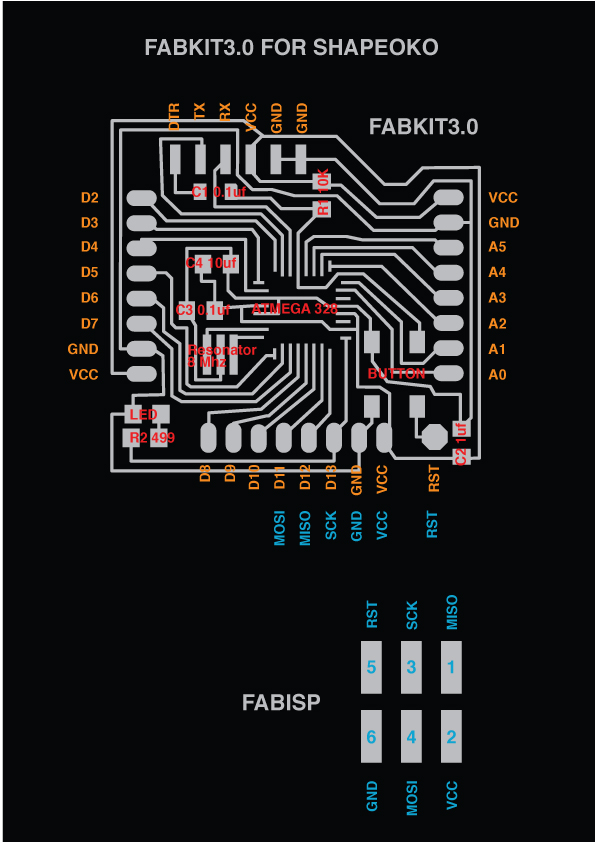
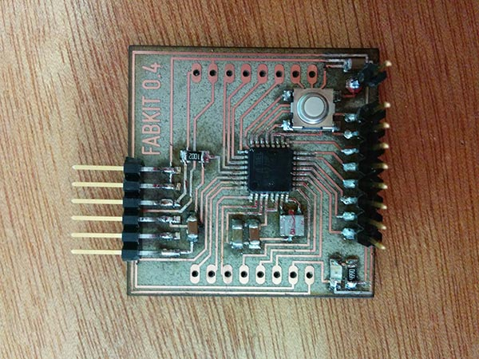
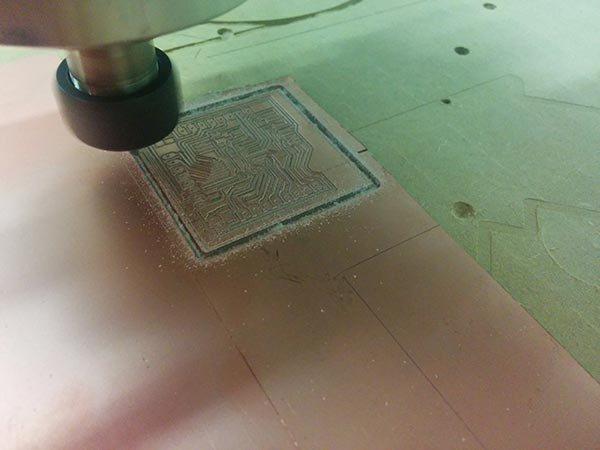
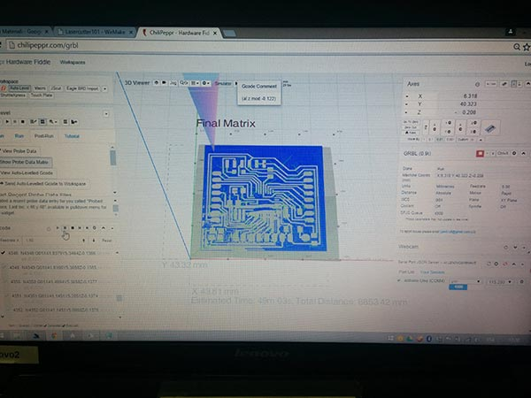
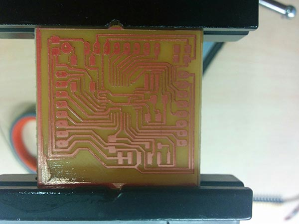
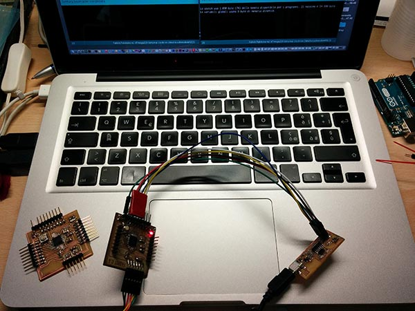
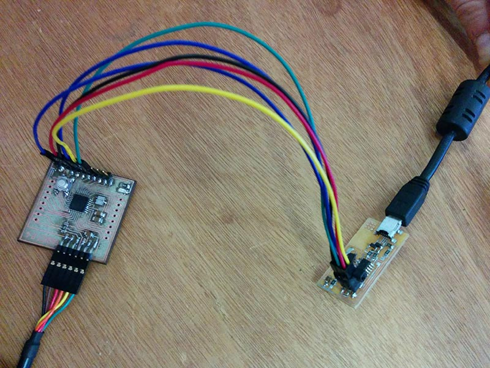
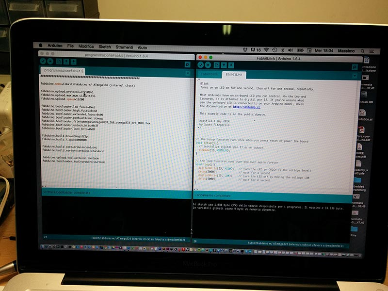
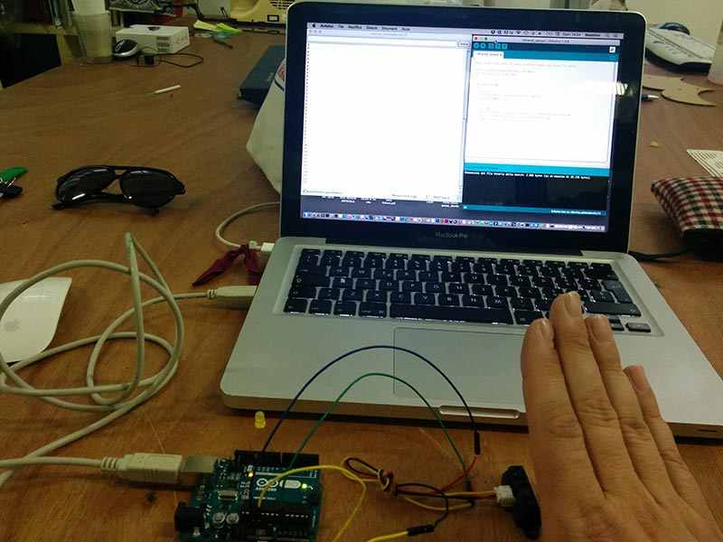
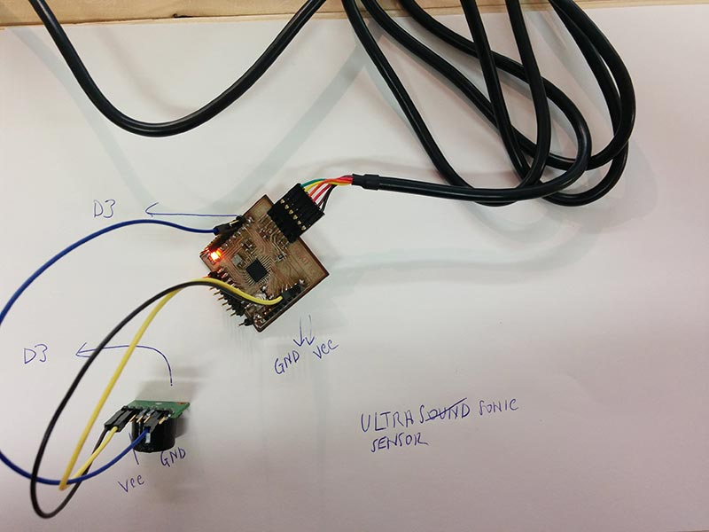

Exercise 10 - Input devices
Assignment
Measure something: add a sensor to a microcontroller board that you've designed and read itI focused my INPUT assignment on the development of the FabKit Exercise. I will use the FabKit for my final project. So i decide to make it understand how I could use it. I decide to create a double version of the Fabkit 3.0 and 4.0 following the tutorial published on FabAcademy website (http://fabacademy.org/archives/2015/doc/projects/fabkit-0.4.html) The version 4.0 has been created using the Trotec Laser Flexxi CO2. The first version 3.0 has been created together with Costantino Bongiorno in order to mill the board using a Shapeoko. All the parameters to mill the FabKit boards have been developed using fabmodules.org finding a good set-up through a long experimentation work (and a lot of trial and errors).
Studying FabKit and Atmega 328
Studying all features reading the Atmel Datasheet of Atmega328 studying all the pinouts. It has been fundamental in order to understand how a microcontroller is conceived and what it its structure. I design a schema to remind me all the connerctions.

The Fabkit 4.0
The Fabkit4.0 has been cutted using the Trotec Laser at OpenDot Makerspace. It is a very easy process. The final aspect of the board is almost perfect. It has been relatively easy to solder and install all the component. Also the debug has been very simple.

The Fabkit 3.0
Shapeoko is a low cost desktop milling machine. For this reason, it has been very interesting to set-up the parameters for milling boards. I supported Costantino Bongiorno (Lab Manager at WeMake) to set-up the final parameters for milling FabKits. The debug of Shapeoko Fabkit has been more a little bit more problematic because the traces are not so perfect and defined.
  
The Fabkit 3.0 traces

Programming the FabKit 3.0/4.0
I use Arduino IDE 1.6.4 connecting the FabISP with the Fabkit. I follow all the instructions of the tutorial. First step i make the Burn Bootloader using the following code.
############################################################## fabduino.name=Fabkit/Fabduino w/ ATmega328 (internal clock) fabduino.upload.protocol=stk500v1 fabduino.upload.maximum_size=14336 fabduino.upload.speed=19200 fabduino.bootloader.low_fuses=0xe2 fabduino.bootloader.high_fuses=0xdd fabduino.bootloader.extended_fuses=0x00 fabduino.bootloader.path=arduino:atmega fabduino.bootloader.file=atmega/ATmegaBOOT_168_atmega328_pro_8MHz.hex fabduino.bootloader.unlock_bits=0x3F fabduino.bootloader.lock_bits=0x0F fabduino.build.mcu=atmega328p fabduino.build.f_cpu=8000000L fabduino.build.core=arduino:arduino fabduino.build.variant=arduino:standard fabduino.upload.tool=arduino:avrdude fabduino.bootloader.tool=arduino:avrdude }
Second step is use a simple sketch (the blink) to check the board. I change more and more times the delay in order to change the on/off of the Led.
/*
Blink
Turns on an LED on for one second, then off for one second, repeatedly.
Most Arduinos have an on-board LED you can control. On the Uno and
Leonardo, it is attached to digital pin 13. If you're unsure what
pin the on-board LED is connected to on your Arduino model, check
the documentation at http://arduino.cc
This example code is in the public domain.
modified 8 May 2014
by Scott Fitzgerald
*/
// the setup function runs once when you press reset or power the board
void setup() {
// initialize digital pin 13 as an output.
pinMode(10, OUTPUT);
}
// the loop function runs over and over again forever
void loop() {
digitalWrite(10, HIGH); // turn the LED on (HIGH is the voltage level)
delay(5000); // wait for a second
digitalWrite(10, LOW); // turn the LED off by making the voltage LOW
delay(5000); // wait for a second
}

Trying sensors for the final project
I used Arduino Uno and also the FabKit trying sensors for my final project. infrared (GP2Y0A21 distance sensor) and Ultrasonar (Maxbotix Maxsonar).Read values from Sharp GP2Y0A21 distance sensor and output to serial Sharp Distance Sensor GP2Y0A21 (10-80cm), Sharp Distance Sensor GP2Y0A21 (10-80cm, 3.1V at 10cm to 0.3V at 80cm)

*/
int ir_sensor = A0;
void setup() {
//initialize serial communications at 9600 bps
Serial.begin(9600);
}
void loop() {
int sensor_value = analogRead(ir_sensor); //read the sensor value
Serial.println(sensor_value); //print the sensor vlue
delay(500); //delay 500ms (0.5 second)
}MaxSonarMaxBotix
void setup() {
Serial.begin(9600);
pinMode(13, OUTPUT);
}
void loop() {
float SonarValue=0;
SonarValue = analogRead(A0);
//float value=pow(116.6020682*(sensorValue2/41763),(-2.769034857));
//float value=pow(10,((220-sensorValue2*1000)+158.631)/62.877 );
delay(100);
Serial.println(SonarValue);
pinMode(13, HIGH);
else
pinMode(13,LOW);
}
